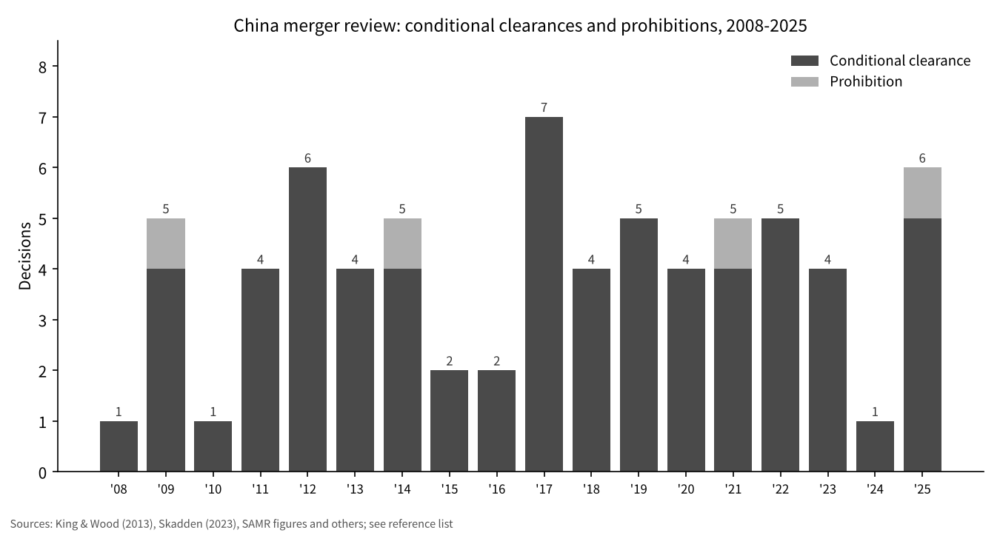
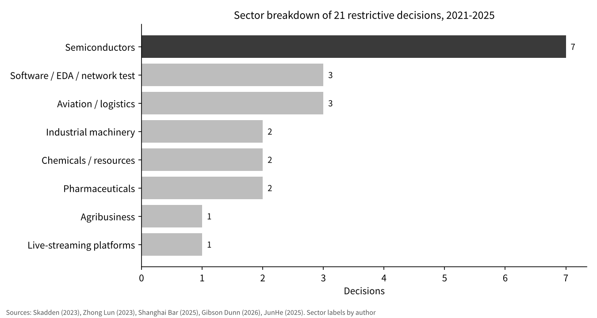

Why Does China Stop Mergers? Placing the SoftBank-ABB Deal in China's Review Record
On 5 November 2026, ABB said it had been informed by SoftBank Group (SBG) that Chinese authorities had prohibited SBG's acquisition of ABB's robotics business [1].
The question here is: in China's antitrust review, in which sectors and in which periods are the "prohibited" and "conditionally approved" deals involving foreign companies concentrated?
I line up the 71 restrictive decisions published from 2008 to 2025 by year and by sector, and then ask where this deal sits in that record.
- From 2008 to 2025 there were 71 restrictive decisions, 67 conditional approvals and 4 prohibitions. The yearly count stayed between 1 and 7 with no steady upward trend, while the ratio to cases reviewed fell from 2.0% in 2014 to 0.85% in 2025.
- The concentration in semiconductors has grown. Of the 21 decisions in 2021-2025, 7 (33%) were in semiconductors, the largest group, and 10 (48%) once software, EDA and network testing are added. Through 2020 the share was 10 of 48 (21%).
- The ABB deal was prohibited not by the antitrust review but by the Office of the Working Mechanism for Foreign Investment Security Review, according to ABB [1]. None of the 71 antitrust decisions came through that channel, so the antitrust record captures only part of the risk that a deal is stopped.

Question and background
On 8 October 2025, SBG announced it would acquire ABB's robotics business at an enterprise value of USD 5.375 billion (about JPY 818.7 billion). Closing required approvals from regulators in the European Union, China and the United States and was planned for mid-to-late 2026 [2]. According to ABB, the business had 2024 revenues of USD 2.3 billion, about 7% of group revenues, and about 7,000 employees [3]. ABB's 5 November 2026 statement relayed SBG's notice that the Office of the Working Mechanism for Foreign Investment Security Review had prohibited the acquisition, and said the two companies remain in dialogue on the transaction [1]. Kyodo News reported the same on that day [4].
Some terms first. Merger review (review of concentrations of undertakings) is the procedure in which the authority examines, before closing, whether a transaction that changes control between companies may eliminate or restrict competition [5]. SAMR (State Administration for Market Regulation) is the Chinese agency that now conducts this review; the Ministry of Commerce (MOFCOM) did so earlier. A conditional approval is a decision that clears a deal on condition that the parties take steps such as divestitures or supply commitments to reduce harm to competition [5].
The Anti-Monopoly Law requires prohibition of concentrations that have the effect of eliminating or restricting competition (Article 34), and requires a separate national security review where a foreign acquisition involves national security (Article 38) [5]. The rules for that review, the Measures for the Security Review of Foreign Investment (issued 19 December 2020, effective 18 January 2021), place the working mechanism office in the National Development and Reform Commission, cover investments in which a foreign investor gains actual control in fields such as key technologies, and allow prohibition or conditional clearance after a special review [6]. So there are at least two channels through which a deal can be stopped in China. I first examine the antitrust record and then consider where this deal fits.
Data and method
The scope is every conditional approval and prohibition from the entry into force of the Anti-Monopoly Law in August 2008 to the end of 2025. Yearly counts were assembled as follows: 2008-2012 from the King & Wood list [7]; 2013-2022 from values read off Skadden's table [8]; the two 2016 decisions from a report on MOFCOM's annual briefing [9]; 2023 from SAMR's figures of 797 concluded cases and 4 conditional approvals [10]; the single 2024 conditional approval from the Shanghai Bar Association report [11]; and 2025's 706 completed reviews, 5 conditional approvals and 1 prohibition from SAMR's release as reported by Xinhua [12].
I checked the assembled series against published cumulative totals: 44 conditional approvals by end-2019 (Lifang) [13], 48 by end-2020 (Xue and Gu) [14], and 57 conditional approvals, 3 prohibitions and 4,760 unconditional approvals by end-2022 (the paper by Hu and Gong) [15]. All matched.
For sectors, I classified the 21 decisions of 2021-2025 (19 conditional approvals and 2 prohibitions) case by case. Case names come from Skadden [8], Zhong Lun [16], SAMR [10], the Shanghai Bar Association [11], Gibson Dunn [17] and JunHe [18]. The classification is mine, and the semiconductor boundary follows Skadden's grouping.
Results

By year, the count moved between 1 and 7. The peak was 7 in 2017, followed by 6 in 2012 and 6 in 2025 (including one prohibition). 2024 had only 1. The four prohibitions were Coca-Cola/Huiyuan in 2009, the P3 network of three shipping lines in 2014, the Huya/DouYu merger in 2021, and in 2025 the acquisition of a papaverine hydrochloride injection maker by a seller of the active ingredient [18]. The 2025 prohibition is described as the first case in which a below-threshold deal was reviewed and an already completed concentration was ordered to be unwound [18].
While the count was flat, the denominator grew. The share of restrictive decisions was 2.0% in 2014 (5 of 245 concluded cases) [19], 0.50% in 2023 (4 of 797) and 0.85% in 2025 (6 of 706) [10][12]. Emch and Lyu estimate about 1.2% before the August 2022 amendment and about 0.6% after it [20].

The sector mix differs by period. The 19 decisions from 2008 to mid-2013 were spread widely across manufacturing, including beverages, chemicals, pharmaceuticals, autos, electrical machinery and retail [7]. The 21 decisions of 2021-2025 split into semiconductors 7, software/EDA/network testing 3, aviation/logistics 3, industrial machinery 2, chemicals/resources 2, pharmaceuticals 2, agribusiness 1 and live-streaming 1.
Foreign companies are heavily involved. SAMR reports that foreign enterprises took part in 46% of the cases concluded in 2023 [10], and in 43.2% of unconditional approvals in 2025 [12]. The only conditional approval of 2024, JX Metals' acquisition of shares in Tatsuta Electric Wire & Cable, involved two Japanese companies [11].
Some deals stop without appearing in the record. On 16 August 2023 Intel announced it was terminating its acquisition of Tower Semiconductor because the regulatory approvals required under the agreement could not be obtained in a timely manner, and that it would pay a termination fee of USD 353 million [21]. Such "time-outs" are not counted as decisions.
Sensitivity analysis
The semiconductor share moves considerably with the case definition and the time window. I recalculated it under six definitions.
| Definition and period | Semiconductor cases | Denominator | Share |
|---|---|---|---|
| A 2011-2020, conditional only | 10 | 42 | 23.8% |
| B 2008-2020, conditional + prohibited | 10 | 50 | 20.0% |
| C 2021-2025, conditional + prohibited | 7 | 21 | 33.3% |
| D 2021-2025, conditional only | 7 | 19 | 36.8% |
| E 2021-2022, conditional only | 5 | 9 | 55.6% |
| F 2021-2025, semiconductors + software/EDA/network testing | 10 | 21 | 47.6% |
The share ranges from 20.0% to 55.6%. Shorter windows give higher figures because the denominator is small. Even so, under every definition the share since 2021 is above the share through 2020, so the finding that semiconductors have become more concentrated survives the change of definition. On the other hand, a year such as 2024 had a single decision, and yearly shares swing widely.
Discussion
A common explanation for the semiconductor concentration is that China is a large buyer of chips, so even deals between foreign companies tend to raise questions about supply to Chinese customers. The Herbert Smith Freehills Kramer paper finds that 24 of the 26 conditional approvals in 2018-2024 included behavioural remedies and that more than 90% contained supply assurances [22]. These figures suggest that the core of the conditions is continued sales to Chinese customers.
There are opposing views. One holds that antitrust review is used as a tool of industrial policy or external bargaining. Another points out that more than 98% of decisions through 2022 were unconditional approvals [15] and that the semiconductor concentration can be explained by oligopolistic market structures. Because my data cover only counts and sectors, they cannot settle which view is right.
The ABB deal was stopped through a channel outside this antitrust record. A news report says it cleared antitrust review in February 2026 [23], but I could not confirm this in a primary source. Neither ABB nor SBG has published the reasons for the prohibition, and the report attributes concerns about data transfers to anonymous sources [23].
The data have limits. First, withdrawn or abandoned filings are not counted; 11 filings were withdrawn after acceptance in 2023 [10]. Second, yearly counts for 2013-2022 are reconstructed from secondary sources. Third, the sector classification is mine. Fourth, foreign investment security review decisions are not published and no counts exist. Fifth, the 2026 ABB decision could not be verified beyond ABB's statement and news reports.
Evidence that could change the conclusion includes sector-level publication of withdrawn cases, publication of security review counts, or a majority of non-semiconductor sectors among conditional approvals from 2026 onward.
Conclusion
Restrictive decisions in China's antitrust review show no strong skew by period, staying between 1 and 7 a year, and their ratio to cases reviewed has actually fallen. By sector, they have concentrated in semiconductors since 2021, and the share stays above the pre-2021 level under every definition tested. Deals stopped by security review, like ABB's, do not appear in this record, so antitrust counts alone cannot measure how easily M&A is stopped in China.
How I see it
I have never estimated in detail the risk that a deal is stopped by a government permit. I try to avoid such businesses as far as possible, and I aim to run businesses without country risk or political risk. What I run are a restaurant, a shared office and a real estate business in Japan, and what I hold are Japanese bank stocks and US stocks. Laying out this record, I found that there are two channels that stop deals, antitrust review and security review, and that the second does not even show its counts. A risk I cannot see is a risk I cannot estimate. So rather than measuring that risk in detail, I expect I will keep my current approach of staying away from it from the start.
References
- ABB, "Update on divestment of ABB Robotics", 2026-11-05, https://www.abb.com/global/en/news/140154/update-on-divestment-of-abb-robotics
- SoftBank Group Corp., "Acquisition of ABB Ltd's Robotics Business", 2025-10-08, https://group.softbank/en/news/press/20251008
- ABB, "ABB to divest Robotics division to SoftBank Group", 2025-10-08, https://www.abb.com/global/en/news/129685/abb-to-divest-robotics-division-to-softbank-group
- Kyodo News (via OANDA Lab market news), report on the ABB robotics acquisition, 2026-11-05, https://www.oanda.jp/lab-education/market_news/kn_2026110501001851/
- Standing Committee of the National People's Congress, Anti-Monopoly Law of the People's Republic of China (amended 24 June 2022), hosted by JETRO, https://www.jetro.go.jp/ext_images/world/asia/cn/ip/law/pdf/origin/regulation20220801.pdf
- National Development and Reform Commission and Ministry of Commerce, Measures for the Security Review of Foreign Investment (Order No. 37), 2020-12-19, https://www.mofcom.gov.cn/dl/file/20211203230801.pdf
- Susan Ning, Hazel Yin, Ziqing Zheng, Kailun Ji (King & Wood), "Review of Merger Control and Merger Remedies Regime in China: From 2008-2013", 2013-08-23, https://www.chinalawinsight.com/2013/08/articles/compliance/review-of-merger-control-and-merger-remedies-regime-in-china-from-2008-2013/
- Andrew L Foster, Kexin Li, Julia Zhu (Skadden), "China: Recent Remedy Cases Showcase Impact of Amended Anti-Monopoly Law", 2023-10-25, https://www.skadden.com/-/media/files/publications/2023/10/china_recent_remedy_cases_showcase_impact_of_amended_anti_monopoly_law.pdf
- China Law & Practice, "MOFCOM recaps 2016 merger reviews", 2017-02-09, https://chinalawandpractice.com/2017/02/09/mofcom-recaps-2016-merger-reviews
- State Administration for Market Regulation (republished by China Quality News), "Interpretation of SAMR's 2023 merger review" (2023年市场监管总局经营者集中案件审查情况解读), 2024-01-25, https://m.cqn.com.cn/zj/content/2024-01/25/content_9023492.htm
- Shanghai Bar Association, Antitrust and Anti-Unfair Competition Committee, "2024 Merger Review Enforcement Analysis Report (Part 1)", 2025-12-12, https://www.lawyers.org.cn/info/7b76cb8cd0b846c7950920a70a01376a
- Xinhua, "SAMR completed 706 merger reviews in 2025", 2026-01-29, https://www.news.cn/20260129/c40f383543014195a6ca15f4406524f9/c.html
- Lifang & Partners, "2019 Antitrust Annual Review (3): China's conditionally approved mergers", 2020-03-11, https://www.lifanglaw.com/cn/cnflds/574.html
- Yi (Josh) Xue, Tian Gu (Zhong Lun), "China: Tougher Merger Control Enforcement in the Semiconductor Industry?", CPI Antitrust Chronicle, 2021-03, https://www.competitionpolicyinternational.com/wp-content/uploads/2021/03/6-China-Tougher-Merger-Control-Enforcement-in-the-Semiconductor-Industry-By-Yi-Josh-Xue-Tian-Gu.pdf
- Shengyan Hu, Jiong Gong, "Understanding merger control remedies in China", PLOS ONE 20(11): e0336795, 2025-11-21, https://journals.plos.org/plosone/article?id=10.1371/journal.pone.0336795
- Yu Xingang et al. (Zhong Lun), "China Antitrust 2022 Annual Review", 2023-01-03, https://www.zhonglun.com/research/articles/9403.html
- Gibson Dunn, "Antitrust in China – 2025 Year in Review", 2026-03-30, https://www.gibsondunn.com/antitrust-in-china-2025-year-in-review/
- Xu Rongrong, Yang Chen, Liu Yucheng (JunHe), "Six-year-old transaction blocked retroactively: the first prohibited below-threshold concentration", 2025-07-25, https://junhe.com/legal-updates/2750
- Ministry of Commerce (republished by made-in-china.com), "2014 Business Review XVIIII: Carry out Anti-monopoly Work According to Law and Maintain a Market Order with Fair Competition", 2015 (exact date not confirmed), https://resources.made-in-china.com/article/policy-opinion/vnLxDVBlvmiu/2014-Business-Review-XVIIII-Carry-out-Anti-monopoly-Work-According-to-Law-and-Maintain-a-Market-Order-with-Fair-Competition
- Adrian Emch, Qing Lyu, "The year in review – a close look at China's merger control since the amendment of the Anti-Monopoly Law", 2024-01-25, https://www.hlc.com/en/publications/the-year-in-review-a-close-look-at-chinas-merger-control-since-the-amendment-of-the-anti-monopoly-law
- Intel, "Intel Announces Termination of Tower Semiconductor Acquisition", 2023-08-16, https://www.intc.com/filings-reports/all-sec-filings/content/0000050863-23-000078/titaniumpressrelease.htm
- Adelaide Luke, Howard Chan, Hazel Xu (Herbert Smith Freehills Kramer), "Shifting tides of China's merger control regime: the role of national and industrial policy in merger reviews and remedy design", Competition Law International 21(2), 2025-12, https://www.ibanet.org/document?id=cli-december-2025-article-5
- Silicon Republic, "China blocks SoftBank's $5.4bn ABB robotics unit acquisition", 2026-11-05, https://www.siliconrepublic.com/business/china-softbank-abb-robotics-japan-data-ai-investment
Charts by YUKI CAPITAL. Header photo: Simon Kadula (Unsplash)
I record my daily numbers and decisions on X.